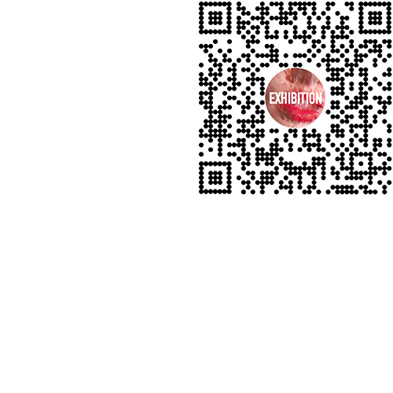
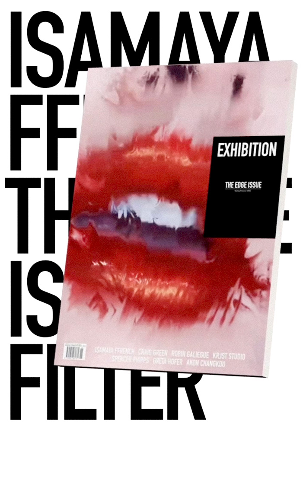

Exhibition Magazine / The Edge Issue
AR. Beauty. Image (2021)
A stylistic AR effect developed for Exhibition Magazine in collaboration with Isamaya Ffrench.
This virtual beauty effect replicates the visual distortion of Isamaya’s ‘Carte Blanche’ cover for the magazine’s 16th Issue—The Edge Issue—using visual displacement and render pass techniques. The distortion is activated when the user presses the ‘record’ button.
As a virtual replica of the original print cover, it invites the audience to actively participate in the creation of their very own stylized cover.
Beauty concept / Isamaya Ffrench
Visual direction / Boris Ovini
AR production / Helena Dong
⑇ Try Isamaya x Exhibition
AR. Beauty. Image (2021)
A stylistic AR effect developed for Exhibition Magazine in collaboration with Isamaya Ffrench.
This virtual beauty effect replicates the visual distortion of Isamaya’s ‘Carte Blanche’ cover for the magazine’s 16th Issue—The Edge Issue—using visual displacement and render pass techniques. The distortion is activated when the user presses the ‘record’ button.
As a virtual replica of the original print cover, it invites the audience to actively participate in the creation of their very own stylized cover.
Beauty concept / Isamaya Ffrench
Visual direction / Boris Ovini
AR production / Helena Dong
⑇ Try Isamaya x Exhibition

Demo / Isamaya Ffrench